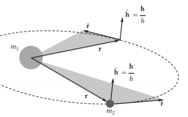
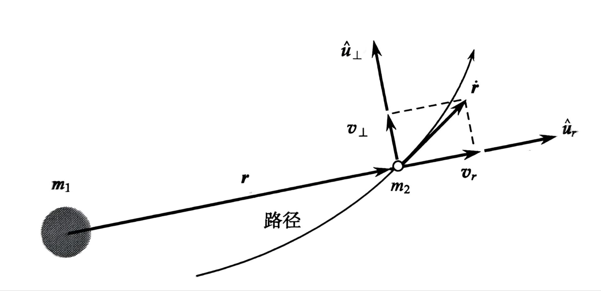
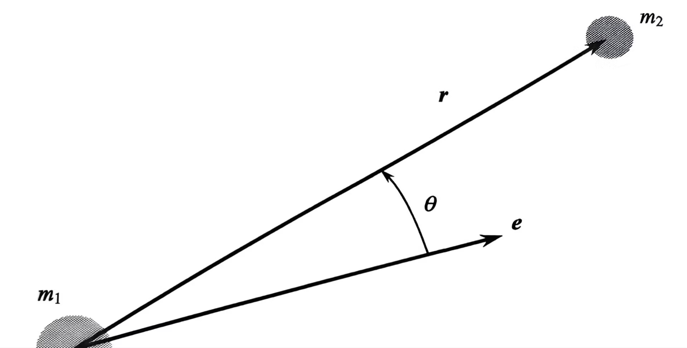
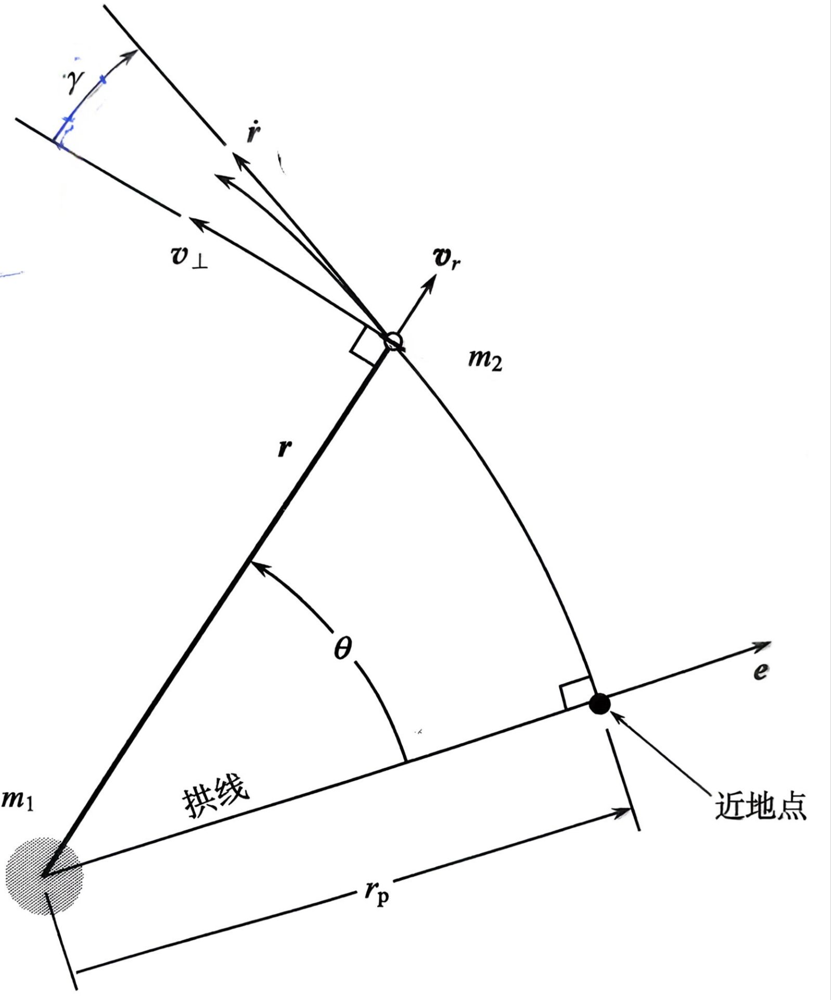
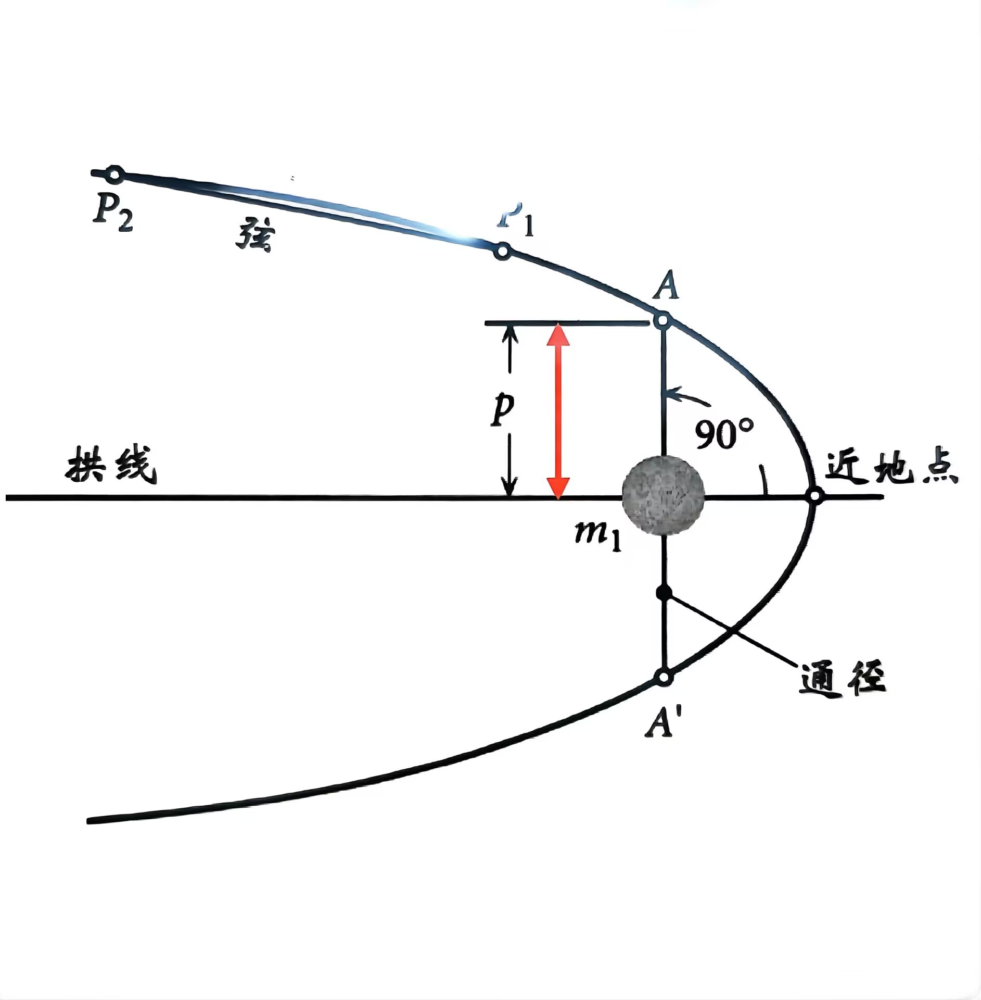

2.4 角动量和轨道方程

物体m2相对于m1的角动量：
H2/1=m2r×v=m2r×r˙
单位质量m2的角动量：
h=r×r˙
对其求导得：
dtdh=r˙×r˙+r×r¨
由于r˙×r˙=0，r¨=−r3μr（这是前面一节求的二体问题加速度与速度之间的代数关系），因而：
dtdh=r×(−r3μr)=−r3μ(r×r)=0
h为常量，角动量守恒。

开普勒第二定律：行星在相同时间内扫过的面积相等。
dtdA=2h
前面的角动量可以写成：
h=ru^r×(vru^r+v⊥u^⊥)=rv⊥h^
角动量的大小仅取决于相对速度的垂直分量：
h=rv⊥
轨道方程：
r¨=−r3μr↔r=μh21+ecosθ1
这个标量轨道方程更便于运算，对于以地球为主的二体问题，μ是固定的，知道某一时刻轨道的距离和真近点角还有角动量就可以求偏心率。
真近点角定义：

轨道方程推导基础知识1：向量求导
r2=r⋅r
dtd(r2)=2rr˙=2r⋅r˙
基础知识2：BAC-CAB运算法则
A×(B×C)=B(A⋅C)−C(A⋅B)
轨道相对运动方程为：
r¨=−r3μr
两边同时叉乘单位角动量：
r¨×h=−r3μr×h
由于h为常量，即h˙=0：
dtd(r˙×h)=r¨×h+r˙×h˙=r¨×h
dtd(r˙×h)=r¨×h+r˙×h˙=r¨×h
移项得到：
dtd(r˙×h)=−r3μr×h
对于右端项：
−r3μr×h=−r3μr×(r×r˙)
应用BAC-CAB法则：
−r3μ[r(r⋅r˙)−r˙(r⋅r)]=−r3μ(rr˙r−r2r˙)
=−μ(r2r˙r−r1r˙)=μdtd(rr)
那么原方程变成了：
dtd(r˙×h)=μdtd(rr)
积分1次得到：
r˙×h=μrr+C
(r˙×h)⋅h−μrr⋅h=C⋅h
又
(r˙×h)⋅h=r⋅h=0
所以C⋅h=0,C在轨道平面内。
定义偏心率矢量：
e=μC
这里说明为什么偏心率可以和Laplace-Runge-Lenz vector撞车：
首先C是常数，C˙=0。
r⋅C=r⋅(r˙×h−μrr)=h⋅h−μr=h2−μr
rCcosθ=h2−μr→r=μ+Ccosθh2
那么：
r˙×h=μ(rr+e)
由于r⋅(r˙×h)=(r×r˙)⋅h=h⋅h=h2，据此可得到：
h2=μ(r+r⋅e)
为了得到轨道方程的标量形式，令r⋅e=recosθ，将其代入前一方程得到轨道方程：
r=1+ecosθh2/μ
或者：
r1=h2μ(1+ecosθ)

径向速度：
vr=r˙=dtdr=hμesinθ
垂直速度（垂直于径向）：
v⊥=rθ˙=rh
飞行路径角（航迹角）：
tanγ=v⊥vr=1+ecosθesinθ
在近地点，θ=0∘，相关参数为：
近地点距离rp=μh21+e1,近地点垂直速度v⊥p=rph=hμ(1+e),近地点径向速度vrp=0
半通径（θ=90∘）为：
p=μh2
